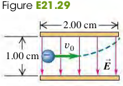

2104 Electric Field and Electric Forces
Exercises
24, 26, 28, 29, 31
21.24 A particle has charge -5.00 nC.
(a) Find the magnitude and direction of the electric field due to this particle at a point 0.250 m directly above it.
(b) At what distance from this particle does its electric field have a magnitude of 12.0 N/C?
21.26 An electron is released from rest in a uniform electric field. The electron accelerates vertically upward, traveling 4.50 m in the first 3.00 after it is released.
(a) What are the magnitude and direction of the electric field?
(b) Are we justified in ignoring the effects of gravity? Justify your answer quantitatively.
21.28 Electric Field of the Earth. The earth has a net electric charge that causes a field at points near its surface equal to 150 N/C and directed in toward the center of the earth.
(a) What magnitude and sign of charge would a 60-kg human have to acquire to overcome his or her weight by the force exerted by the earth’s electric field?
(b) What would be the force of repulsion between two people each with the charge calculated in part (a) and separated by a distance of 100 m? Is use of the earth’s electric field a feasible means of flight? Why or why not?
21.29 An electron is projected with an initial speed m/s into the uniform field between two parallel plates (Fig. E21.29). Assume that the field between the plates is uniform and directed vertically downward and that the field outside the plates is zero. The electron enters the field at a point midway between the plates.
(a) If the electron just misses the upper plate as it emerges from the field, find the magnitude of the electric field.
(b) Suppose that the electron in Fig. E21.29 is replaced by a proton with the same initial speed . Would the proton hit one of the plates? If not, what would be the magnitude and direction of its vertical displacement as it exits the region between the plates?
(c) Compare the paths traveled by the electron and the proton, and explain the differences.
(d) Discuss whether it is reasonable to ignore the effects of gravity for each particle.

Solution
a. Let the displacement of the electron be , the time of the electron staying between the two plate be
b.
21.31 In Exercise 21.29, what is the speed of the electron as it emerges from the field?